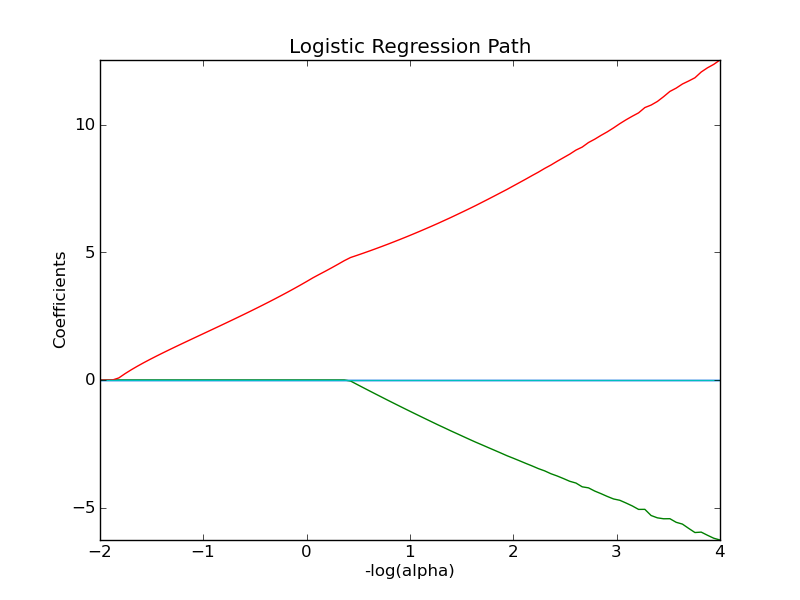

Path with L1- Logistic Regression¶
Computes path on IRIS dataset.
Python source code: plot_logistic_path.py
print __doc__
# Author: Alexandre Gramfort <alexandre.gramfort@inria.fr>
# License: BSD Style.
from datetime import datetime
import numpy as np
import pylab as pl
from scikits.learn import linear_model
from scikits.learn import datasets
iris = datasets.load_iris()
X = iris.data
y = iris.target
X = X[y != 2]
y = y[y != 2]
X -= np.mean(X, 0)
################################################################################
# Demo path functions
alphas = np.logspace(2, -4, 100)
print "Computing regularization path ..."
start = datetime.now()
clf = linear_model.LogisticRegression(C=1.0, penalty='l1', eps=1e-6)
coefs_ = [clf.fit(X, y, C=1.0/alpha).coef_.ravel().copy() for alpha in alphas]
print "This took ", datetime.now() - start
coefs_ = np.array(coefs_)
pl.plot(-np.log10(alphas), coefs_)
ymin, ymax = pl.ylim()
pl.xlabel('-log(alpha)')
pl.ylabel('Coefficients')
pl.title('Logistic Regression Path')
pl.axis('tight')
pl.show()